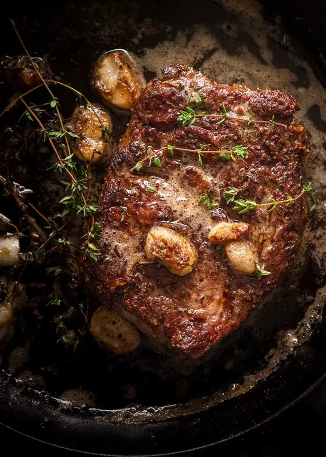

World's #1 Steak Recipe

Description:
A tried and true steak recipe that'll get you up and running with a delicious slab of steak in no time!
Ingredients:
- Thick-cut steak - no more than 2.5cm thick, looking for boneless rib eye / scotch fillet / porterhouse / New York / T-bone.
- Butter
- Garlic
- Thyme
Steps:
- Bring the steak to room temperature before beginning.
- Pat the steak dry and season it generously with salt and pepper.
- Get the skillet SMOKING HOT before cooking.
- Take the steak off slightly before your preferred internal temperature, since it will rise slightly while resting.
- Rest for 5 minutes, allowing the meat to absorb its juices and relax its fibres.
Want to see our other recipes?
Head back to our home page.